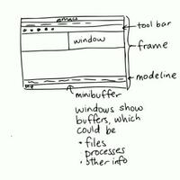

Aprendiendo A Usar Emacs
Emacs
Introduccion
No me voy a molestar contando otra vez la historia y dando los detalles técnicos de Emacs, sí deseas conocer la historia de emacs recomiendo leer el articulo de wikipedia es lo suficientemente bueno para que poder entender que hace tan especial este editor. Mi objetivo con este tutorial es que cualquier persona que este interesada en aprender a usar emacs no se quede completamente atorada con las cosas básicas, este tutorial NO abarca a profundidad sobre todo sobre emacs, es solo una introducción para poder utilizar esta herramienta y modificarla a tu gusto.
Glosario (Lectura obligada)
Al ser un editor con tanta historia Emacs tiene algunos términos que ya son muy anticuados y muchas personas encuentran problemas al no entender a que se refieren, así que me voy a tomar un tempo para explicarlas con mis palabras, sí quieres aprender mas terminología de emacs puedes encontrarla aquí.
- meta-key (M)
- La tecla meta, por lo general esta mapeada a la tecla ALT esta tecla nos permitirá hacer algunos comandos dentro del editor.
- ctrl-key (C)
- Tecla ctrl, algunos usuarios de emacs (yo incluido) recomiendan cambiar la tecla CAPS-LOCK por otro ctrl extra, esto es debido a que en emacs la tecla ctrl cumple un rol indispensable para ingresar comandos y al estar en un lugar tan incomodo te puedes lastimar (sí gente el RSI es algo que la que los nerds tenemos que preocuparnos).
- Hook
- es una lista de funciones que se llamarán en ocasiones específicas, como guardar un búfer en un archivo, activación del modo principal, etc.
- Buffer
- Un buffer corresponde a cada archivo que se encuentra siendo editado en el momento, luego se extenderá más en el tema.
- Frame
- una ventana de emacs, emacs puede comunicarse entre varias ventanas esto es muy útil por si tenemos múltiples pantallas, así podemos controlarlas todas sin tener que usar el mouse.
- window
- Un Frame de emacs se puede dividir para ver el contenido de múltiples Buffers al mismo tiempo.
- Killing
- Corta (para fines prácticos lo dejaremos así).
- Yanking
- Pegar (Igual, para fines prácticos lo dejaremos así).
- Lisp
- Es un lenguaje de programación, elisp es una variante de lisp sobre la cual se extiende emacs.
- Init file
- Archivo de inicio, aquí escribes todas tus configuraciones de emacs.
- Key Binding
- Atajo de teclado.
- Macro
- Secuencias de comandos, se pueden usar para definir nuevas funcionalidades.
- Minibuffer (M-x)
- Es el buffer de la zona inferior, allí podemos ingresar nuestros comandos.
- Layout de emacs
- diagrama extraído de la pagina de Sacha Chua, sin duda sus infografías son algo que debes leer para entender mejor.

Nemotécnicos de emacs (Lectura obligada)
Emacs para describir sus keybinds, tiene un sistema de abreviaturas
| Nemotécnico | Descripción |
|---|---|
| M | Tecla meta, esta mapeada en el botón ALT. |
| C | Tecla ctrl, esta mapeada en el botón CTRL. |
| C-x | Presionar las teclas <CTRL + x>, esta es una combinación muy común. |
| M-x | Presionar las teclas <ALT + x>, este es el comando para abrir el minibuffer. |
| C-x s | Primero presionamos <CTRL + x> y luego <s>. |
| C-x C-f | Primero presionamos <CTRL + x> y despues <CTRL + f>. |
Key Binding indispensables
No me voy a detener tanto en este apartado, muchos de los tutoriales que he leído siempre cometen el error de bombardear a los nuevos usuarios con un montón de combos de teclas, los cuales realmente nadie usa por que son para casos muy específicos, solo me voy a enfocar en los que yo uso diario, osea los más comunes e indispensables.
| Key Bind | Descripción |
|---|---|
| M-x | Abrir minibuffer |
| M-w | Copiar |
| C-y | Pegar |
| C-w | Cortar |
| C-x b | Lista De <Buffers> |
| C-x o | Cambiar De <Buffer> |
| C-x 1 | Maximizar <Buffer> |
| C-x 0 | Minimizar <Buffer> |
| C-x 2 | Dividir <Frame> Verticalmente |
| C-x 3 | Dividir <Frame> Horizontalmente |
| C-x c | Salir de Emacs |
| C-x s | Guardar Buffer |
| C-u | Undo |
| C-_ | Redo |
Tutorial Básico De Elisp
Quería escribir un tutorial muy basico de elisp, pero la verdad ya existe un mejor tutorial por parte de los chicos de learnxinyminutes, así que sí deseas extender tu conocimiento en Elisp, ese es un buen lugar para empezar, recomiendo leer los ejemplos para poder entender como funciona superficialmente el lenguaje. Sí el sitio no esta disponible dejo una copia aquí.